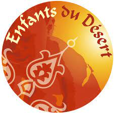

UN RALLYE HUMANITAIRE
Enfants du Désert
Les équipages chargent leur voiture de fournitures scolaires pour aider l'association "Enfants du Déserts" dans sa lutte contre la non-scolarisation des enfants marocains.
Aujourd’hui, c’est :
- 31 salles de classe et 8 écoles complètes construites
- 240 000 enfants qui ont reçu du matériel scolaire
- 3 hôpitaux soutenus et 16 300 kits d'hygiène remis
- 6 forages de puits
La Croix Rouge Française

Après avoir rempli leur 4L de fournitures scolaires, les Trophistes doivent ajouter 10 kg de denrées alimentaires non périssables qu'ils devront acheminer jusqu'au Village de Départ.
Toutes ces denrées ont permis, en 2020, de servir plus de 20 000 repas à des familles françaises en nécessité.
POUR RÉSUMER:
UNE EXPÉRIENCE HUMAINE ET SPORTIVE :
+ de 6 000 km sur route, chemins, sables…
+ de 2 500 jeunes regroupés autour de la solidarité et du challenge
Soutien moral, matériel et financier aux bénévoles et populations locales
UNE MISSION HUMANITAIRE:
Construction d'écoles, de blocs sanitaires, de puits…
80 tonnes de fournitures scolaires et sportives pour plus de 20 000 enfants de la Province d’Errachidia
10kg de denrées par équipages X 1 400 équipages = 20 000 repas servis
Présence auprès d’enfants déscolarisé dans des milieux précaires